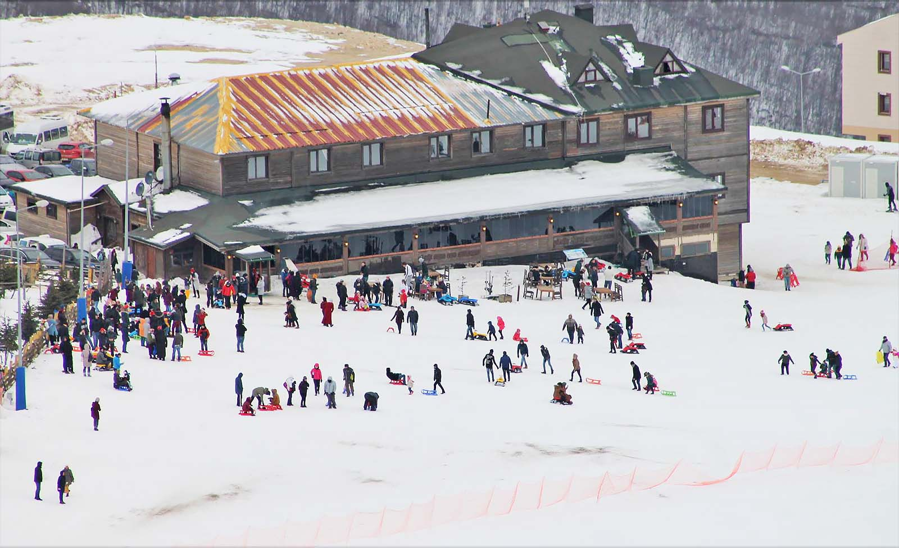
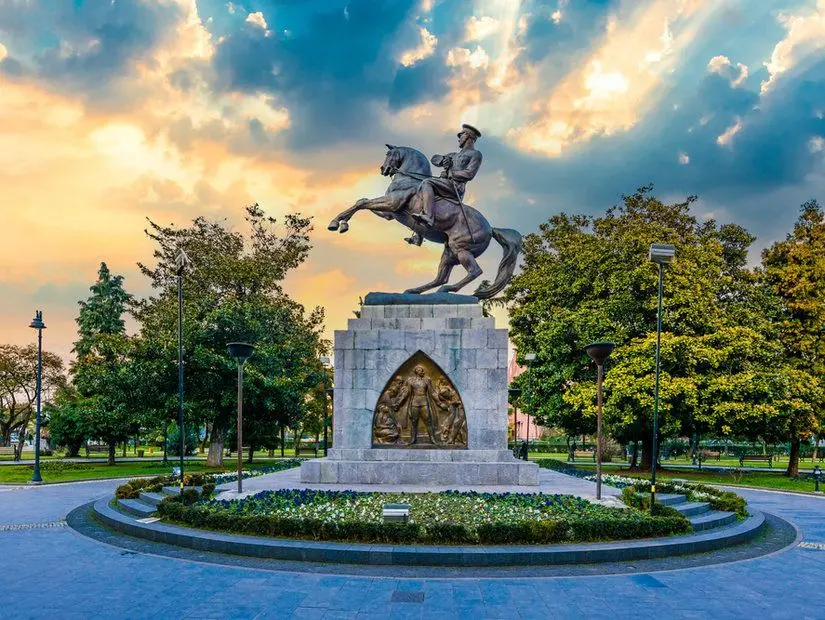

Samsun'da Gezilmesi Gereken Turistik Yerler
1) Amisos Mezarları
Amisos Tepesi MÖ 3. yüzyıla tarihlenen ve 28 Kasım 1995 tarihinde
keşfedilen sit alanıdır. Tümülüslerdeki mezar odaları korumaya alınmadan
önce defineciler tarafından keşfedilmiş ve soyulmuştur. Bu nedenle mezar
yapılarının bazı kısımları hasarlı durumdadır. 2004-2005 yıllarında
yapılan kazılarda tümülüsün Helenistik döneme ait olduğu saptanmış ve
Pontus Krallığı'nın üst düzey yönetici ailelerinden birine ait olduğu
düşünülen bir mezar yapısı olduğu tespit edilmiştir.
Mezar odalarında yapılan kurtarma kazılarında Amisos Hazinesi adı
verilen bir takım gömütler de bulunmuştur ve bu buluntular günümüzde
Samsun Arkeoloji ve Etnografya Müzesi'nde sergilenmektedir.
2008 yılında tamamlanan çalışmalar sonrasında turizme hizmet edecek
şekilde yeniden düzenlen tümülüslere Amisos Tepesi adı verilmiş ve mezar
odaları ziyaretçilere açılmıştır.
2) Atakum Sahil
Atakum, Samsun merkeze en yakın ve en uzun (15 km) sahil şeridine sahip
ilçe olma özelliği taşımaktadır. Mavi bayraklı plajları, berrak denizi,
tertemiz kumu ve yaz aylarında kavurucu sıcağıyla Karadeniz’in en güzel
plajlarına ev sahipliği yapıyor. Samsun’da nefes aldığınızı
hissedebileceğiniz, hem dinlenip hem eğlenebileceğiniz Atakum’un en ünlü
plajları, yerli ve yabancı turistlerin adeta uğrak noktası olmuştur.
Atakum’da sahil şeridi boyunca uzanan popüler plajları: İnci Plajı,
Körfez Plajı, Omtel Plajı ve Çatalcam Plajı olduğu söylenebilir. Kıyı
boyunca çeşitli eğlence mekanlarına rastlamak mümkündür.
3)Batıpark
825 000 m² lik Batıpark'ta' yer alan tesisler, Amazon kanalı, Seyir terası, Balık restoranları, Piknik alanları gibi rekreasyon alanları insanların kullanımına arz edilmiştir. Dolgu alanında 730 m uzunluğunda, su kanalı projesiyle, Kürtün Irmağı ağzı koyu ile Eski Yalova Gemisi koyu arası birleştirilmiş, deniz ile kanal arasında suni bir ada ve tepecikler oluşturulmuştur. Batıpark Amazon adasında yer ve zeminin sağlamlaştırılması amacıyla oluşturulan 2 tepeye kafe ve seyir platformu olacak şekilde dev aslan figürleri konumlandırılmıştır. Bir Aslan heykelinin oturduğu alan yaklaşık 160 m² olup içerisinde dia gösteri merkezi kafeterya ve seyir terasları yer almaktadır. Aynı zamanda Aslanların arasında 12.5 metrelik Amazon Heykeli bulunmaktadır.
4) Ladik-Akdağ Kış Turizm Merkezi
Karadenizde en modern kayak tesisine sahip Ladik-Akdağ Kayak Merkezi
Samsun iline bağlı Ladik ilçesine 7 km uzaklıkta olup şehir merkezine 80
km uzaklıktadır.
Rakımı 1450-1900 metre olan bu tesislerin kayak pistinin uzunluğu ise
1360 metredir. Yerel halkla birlikte çevre şehirlerden de gelen
ziyaretçilerin kışın kayak yapıp eğlendiği çok güzel bir kayak
merkezidir.

5) Onur Anıtı
Cumhuriyet Meydanı’nın hemen yanı başında, Atatürk Anıtı’nı çevreleyen
park, Samsun’un ilk parkıdır. Bu alan; çevre düzenlemesiyle, süs
havuzları ve elbette Atatürk Anıtı’yla Samsun'a gelen ziyaretçilerin ilk
durak noktasıdır.
Samsun’un Onur Anıtı olan bu heykelin kaidesiz yüksekliği 4.75 metre,
kaideli 8.85 metre. Büyük bir kaide üzerinde şahlanan bir at üstünde
Atatürk, bütün heybeti ile görülüyor. Gururlu bir anlatımla batıya ve
çok uzaklara dikilen bakışları azim dolu. Şahlanan atın üzerinde dimdik
bir vücut oturmakta.
Bu oturuşta bir korkusuzluk ve Türklüğün gücü ifade ediliyor. Sert çelik
bir kol kılıca uzanmış. Kaidenin yanlarında iki kabartma ve öteki
yanlarında da yazılar var. Kabartmanın birinde iskelede sandalın yanında
mermi ve cephane taşıyan insanlar görülmekte. Arkalarında bir de top
arabasının bulunması, savaş anını canlandırdığını gösterir.

6) Göğceli Camii
Göğceli Camii Samsun'un Çarşamba ilçesindeki Göğceli Mezarlığı
içerisinde yer alan camidir. 1206 yılında Anadolu Selçuklu Sultanı I.
Gıyaseddin Keyhüsrev döneminde inşa edilen yapı tamamen ahşap malzemeden
yığma tekniği ile inşa edilmiştir. Kapladığı 392m2'lik alanla
Türkiye'deki en büyük yığma ahşap camilerden biri olan yapı aynı zamanda
Türkiye'deki en eski ahşap camidir.
Tarihçe ve mimari yapısı hakkında daha fazla bilgi için
tıklayınız.


7) Çetinkaya Köprüsü
Bafra'da bulunan Çetinkaya Köprüsü zamanın en güzel ve mükemmel
eserlerinden olan Çetinkaya Köprüsü 7 kemerli olup, 250 m
uzunluğundadır.
Cumhuriyetimizin ilçemizde ki ilk ve büyük eserlerinden biridir.
Kızılırmak üzerinde karşıdan karşıya geçiş 1937’den önceki devirlerde
650 m uzunluğundaki ahşap bir köprü ile sağlanıyordu. Kalın kalaslar
üzerine çok ilkel bir şekilde inşa edilen, kıyıları ince tahta
korkulukla korunmaya çalışılmış köprü, üzerinden geçenler için gerçekten
çok büyük bir tehlike arz ediyordu.
Bunu gayet iyi bilen başta zamanın Belediye Başkanı Zihni Lokman
Bey (1934-1938) olmak üzere diğer bazı ilgililer; yeni ve betonarme bir
köprü yaptırabilmek için Ankara nezdinde teşebbüse geçtiler. Devamlı
irtibat, müspet sonuç verdi. Ve zamanın Ulaştırma Bakanı Ali Çetinkaya
yeni köprünün yapımı ile bizzat ilgilendi. Nihayet 4 Kasım 1937'de
köprü, büyük ve heyecanlı bir törenle hizmete açıldı. İsmi, Ali
Çetinkaya izafeten Çetinkaya köprüsü oldu.
Köprünün Hikayesi
Bu köprüde gelin ve damadın köprüden geçerek dua edip dilek tutarak suya
taş atma geleneği yıllardır devam ediyor. Yörede "Gelin Köprüsü" olarak
da adlandırılan Çetinkaya Köprüsü, geçmişte yaşanan acıklı hikayesi
dolayısıyla türkülere bile konu olmuş.
Neşet Ertaş, "Köprüden geçti gelin" türküsünü bu köprüden esinlenerek
kaleme almış ve seslendirmiştir. türkünün hikayesi ise şöyledir:
Köprünün üzerinden gelin alayı geçerken atların uçan bir kartaldan
ürkmesi ve köprünün yıkılarak gelin ve gelin alayının nehirde boğularak
can vermesi üzerine 'Köprüden Geçti Gelin' türküsü yazılmıştır.
Çetinkaya Köprüsü'nde, yaşanan acı olayın ardından gelin alayı geleneği
günümüzde de halen devam etmektedir.